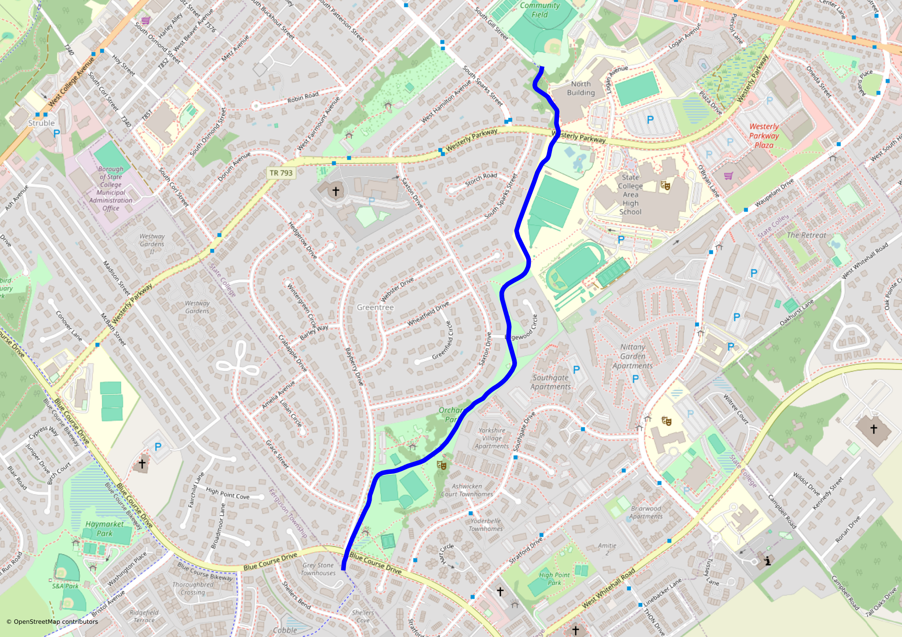
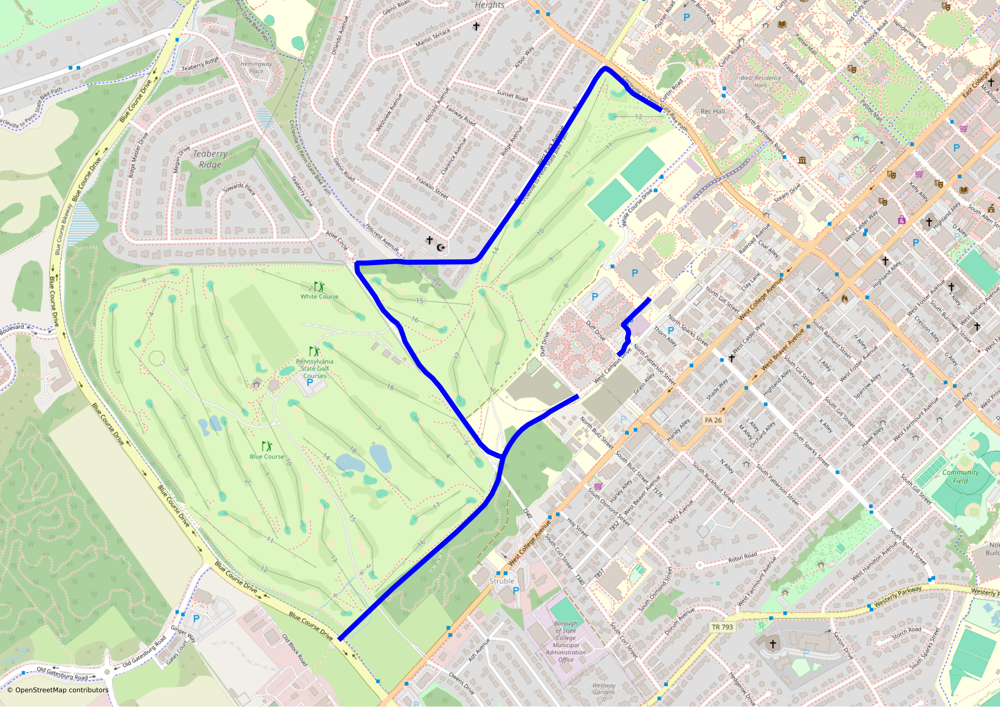
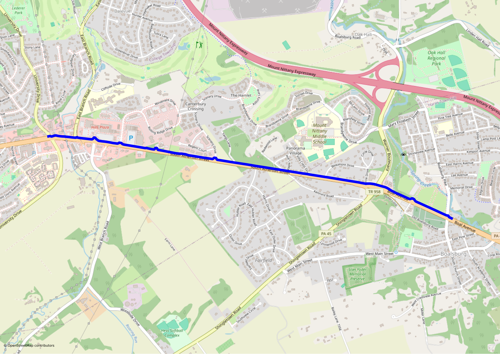
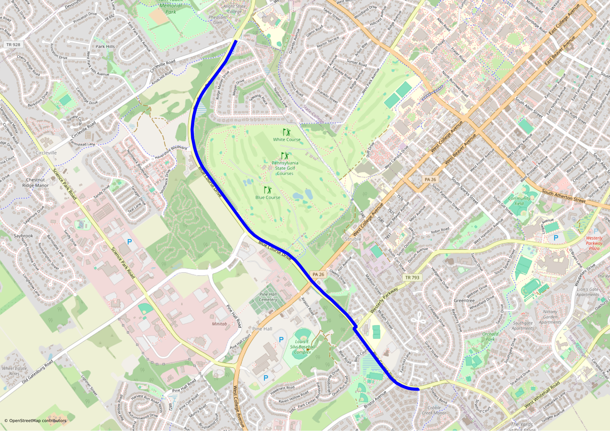
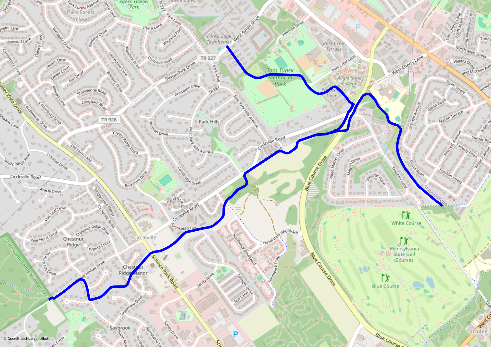
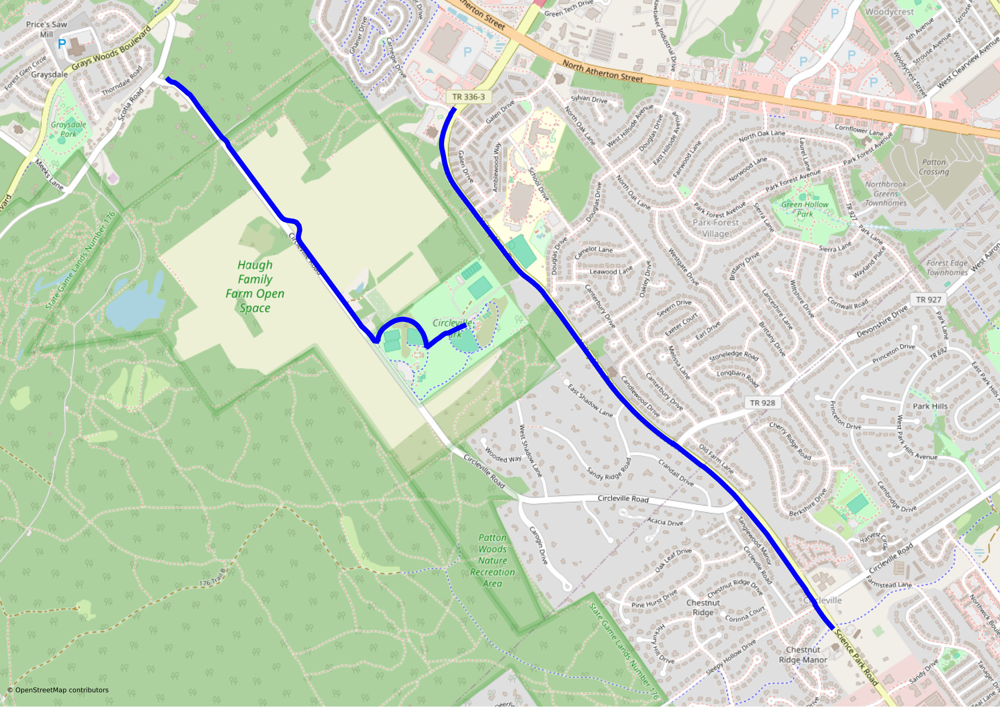

Getting around State College and Penn State without a car
Basic orientation
The core downtown and campus area of State College is compact enough that you really don’t need a car to get around: you can walk from one side to the other in less than an hour, and there are a variety of bus and bike routes if you don’t want to walk. However, even if you live nearby, you’ll sometimes need to get further out for groceries, medical appointments, recreation, etc. This can be trickier.
The downtown part of State College is roughly laid out in a grid – though the roads are aligned with the local mountain ridges rather than on a compass grid. The busiest “east-west” street is College Avenue (really SW-NE). This forms the boundary between the downtown area and the Penn State campus.
If you are moving here and hoping to avoid driving, you should think carefully about locations before you arrive. Some areas offer much better bike and bus connectivity than others, even at comparable distances from downtown. (As a general rule, the more students in a neighborhood, the better the transit.)
There is a network of bicycle routes of various kinds. There are a few nice off-road, fairly long distance routes that connect various parts of town over distances of a couple miles. Closer to downtown, the bike options consist primarily of unprotected lanes on roadways. The “Next Generation Safety and Mobility Plan” envisions some improvements in this area – stay tuned. Realistically, State College’s greatest bicycling asset is that it’s just not that big and you can usually find a combination of quiet residential streets and the bike paths to take you where you need to go.
A few other roads have been designated as “bicycle routes”. These should mostly be understood as it-would-be-nice-if-it-were-a-bicycle routes: they are just roads, with no actual bicycle improvements, seemingly designated to fill gaps between actual bike routes. These roads are generally fine to ride on, though they don’t offer any particular advantages. The exception is Easterly/Westerly, which is a designated bicycle route but not a good place to ride. This issue will be ameliorated by the completion of a multi-use path along the road in late 2026.
The local bus service is provided by the Centre Area Transit Authority (CATA). CATA nowadays offers regular bus service between many areas and downtown, with other less populous parts of town served by CATAGO microtransit, in which you request a ride by app or phone call and a smaller vehicle is dispatched to pick you up. Depending on the trip, it can take you to a destination within the zone or to a stop where you transfer to a regular bus. This can be convenient, although the necessary transfer means it’s often not the speediest option. CATA is very good about updating their schedules on Google maps (including temporary detours etc), and it is probably the best way to do routing.
Bike routes
The Centre Region Council of Governments provides an interactive bike map showing both off- and on-road options. There is also a static version updated every year that shows which paths are cleared in the winter.
The crowdsourced site OpenStreetMap has more accurate coverage of the local bike connections than Google Maps does. I don’t know who is responsible for keeping it so up-to-date, but thank you! (Google has some weird deficiencies: for example, it doesn’t know you can bike through Central Parklet and will tell you to ride on Beaver Ave instead! Don’t do this.) OSM does not provide routing, but various third-party sites provide routing on their maps. I use OpenRouteService. The bikeway maps on this site use the Centre Region COG bikeway data over an OpenStreetMap background; for actual route planning I still usually use OpenRouteService. Its suggestions are occasionally a little wonky, but so are Google’s, and at least OSM isn’t tracking me.
Off-road
Here is a brief overview of the main off-road bicycle routes.
- The Orchard Park bike path runs from near the high school out to the southwest side of town (Cato Park, Waupelani area, Harner Farm, YMCA,…). At the north end it connects to Gill St which provides a pleasant (if hilly) route onto the west side of campus, with access to Pollock over the IST bridge.

- Several paths go through and around the PSU golf courses. A north/south route along the old Corl St connects the western edge of downtown to the Tudek/Circleville and Blue Course paths. Another path follows College Avenue most of the way from campus to Blue Course, with connections possible to Gill St and others. To the east one has access to campus, including through the IST bridge to Pollock Rd.

- The South Atherton bike path goes from around Atherton/University out to Boalsburg, about five miles. It connects to downtown via a cut-through to Garner St. It is not the best path, crossing a lot of turn-offs for businesses, but it’s a good option in this direction.

- The Blue Course bike path follows Blue Course Dr, from Radio Park elementary, skirting the western edge of the golf course, and ending near Orchard Park. As of fall 2026, an extension from Bayberry Drive to Whitehall Road is under construction, with completion expected late in the year. This will make the route much more useful for reaching Whitehall Regional Park and the Musser Gap side of Rothrock.

- The Tudek/Circleville bikeway runs from Tudek Park and Radio Park west to Valley Vista (and a bit beyond, with access to the Scotia gamelands off Sleepy Hollow). At the eastern end, it has easy connections to both the golf course paths (leading to campus and downtown) and the Blue Course path. At the western end, it connects to the Valley Vista multi-use path, which provides a route north towards Grays Woods.

- There are two parallel north/south paths on the western side of town, one along Valley Vista and one on Circleville. The path on Valley Vista connects to the Tudek path and the rest of the network at the intersection with Science Park. The Circleville Park begins further north but reaches all the way to Grays Woods. You can get from Valley Vista to the Circleville path by cutting through Circleville Park; take the turn-off for Little Lion Drive by Park Forest Middle School. Together, these paths will get you from downtown all the way to Grays Woods with virtually no riding on a road. It’s about seven or eight miles.

Roads
Bus service
CATA provides a variety of bus routes around town, as well as CATAGO and CATARIDE paratransit to fill in the gaps in the bus system. The basic fare is $2.50 for a ride; you can pay exact cash, use tickets/tokens or the Token Transit app, or tap a contactless card or phone. Many of the apartment complexes provide passes to residents. It is also possible to buy passes directly. These are very expensive – you basically break even if you commute by CATA twice a day every weekday and come out ahead only if you use the bus even more than that. If you are a PSU faculty, staff, or graduate student, and you agree to forego having a good parking spot on campus, you can participate in the RidePASS program and get a pass at a more reasonable rate, subsidized by PSU.
All CATA buses and CATAGO vehicles have easy-to-use bicycle racks on the front that can accommodate any standard bike. Combining a bus trip with a bike ride greatly expands the area you can easily reach, and it’s worth getting in the habit of using these racks.
Bus routes
BL/WL/RL (Blue Loop/White Loop/Red Link)
These three routes are subsidized by Penn State and offer free (for everybody), high frequency service around parts of campus and downtown.
AC (Atherton Street Connector)
This bus offers service back and forth on Atherton St between (roughly) Hills Plaza to the south and Colonnade to the north.
CC (College Avenue Connector)
The CC is no longer just a short College Avenue route. It runs from the Benner Pike/Nittany Mall area through Lemont and along College Avenue to downtown, then continues west through the Havershire/Circleville area to Cato Park and Research Drive. The exact pattern varies by day and service level, so check the current schedule, but it is once again a genuinely useful east-west route.
Beaver Avenue Shuttle / College Avenue Shuttle
These two buses are run by PSU Transportation, not CATA, but they are free for anybody to ride. Ignore the names, which have almost no connection to their current routes.
The current schedules and maps are on the PSU Transportation site, and real-time locations are available in Penn State Go and TransLoc. The College Avenue shuttle runs every 15 minutes on weekdays and serves central campus, downtown, and the north end of campus near the Arboretum and IM Fields. The Beaver Avenue shuttle runs every 20 minutes on weekdays and every 40 minutes on weekends, serving West Deck, central campus, and the north end of campus. In August 2026 PSU discontinued the Beaver shuttle’s old service to Innovation Park, Mount Nittany Medical Center, and Centre Medical Sciences. The hospital is now served instead by a CATA demand-response service that must be booked by 5 PM the previous day.
N/NE (Martin St/Aaron Dr)
These routes serve several apartment complexes in the vicinity of Aaron Drive. They also serve Northland Center (the source of the initialism, I believe) which has some supermarket options.
V/VE (Vairo Blvd express)
These routes serve the apartment complexes off Vairo Blvd with service to downtown. The express VE skips some inbound stops.
H/HU (Toftrees)
The HU shuttles between Toftrees and campus, while the H runs from downtown, through campus, through Toftrees, and out to Colonnade. If you are at College and Allen and trying to get to Colonnade, you may be tempted to get on the H when you see the headsign that reads “Trader Joe’s”. This is a trap – this is an extremely slow way to get to Trader Joe’s. Just keep waiting for the next N, V, or AC. (Trivia: “H” is for Hospital, where this route went a long time ago.)
NV (Havershire/Martin/Vairo/Toftrees)
The NV is still the late-night catch-all route on Monday through Saturday, running from about 10 PM until after 2 AM and stitching together Havershire, Martin Street, Vairo Boulevard, Toftrees, campus, and downtown. On Sundays it does something much more ambitious: the same corridor operates every half hour through most of the day and into the evening. The old experimental reverse-loop VN is gone.
R/RC/RP (Waupelani)
These three routes cover various parts of the Waupelani Drive area and environs.
UP (University/Parkway Circulator)
The UP is a weekday circulator connecting downtown and campus with University Drive, Easterly/Westerly Parkway, Parkway Plaza, and the Waupelani Drive area. It is useful for trips that don’t line up naturally with the AC or R-family routes.
CATAGO / CATAGO Expansion Zones
CATAGO is CATA’s on-demand service for parts of the Centre Region that do not have ordinary fixed-route bus service. The three main zones are Centre Area North (roughly Lemont/Houserville), Centre Area East (Boalsburg), and Centre Area West (parts of Ferguson and Patton Townships). Within a zone you request a trip through the CATAGO app or by phone; in many cases the useful trip is from your origin to a designated transfer point on the fixed-route system. Transfers between CATAGO and regular CATA routes are free. The fare is the normal CATA fare, currently $2.50.
In January 2026 CATA added larger Expansion Zones around the three ordinary CATAGO zones. These make a surprisingly large part of the outer Centre Region reachable without a car, but they work differently: rides in the expansion area have to be reserved by 5 PM the day before (and can be booked up to 14 days in advance). This is worth knowing about for medical appointments, recreation, and destinations that look completely unserved if you only look at the fixed-route bus map.
Mount Nittany Medical Center also has a separate CATA demand-response hospital service. It runs 7 AM–8 PM on weekdays and likewise requires a reservation by 5 PM the previous day; Penn State faculty, staff, and students can ride free when the trip starts or ends on campus.
Other transportation
Rental bikes
There is a network of shared eBikes available for rent all over town and campus, Spin bikes. I have never ridden one, but the service seems to be very popular and I see the bikes all over the place. I do not know exactly what area has reliable coverage.
Rental cars
It is probably unavoidable: sometimes you need a car. There are several car rental options not too remote from downtown. If you’re a PSU employee, you can get very good deals on personal car rentals through National and Enterprise using the Big Ten discount (at time of writing, the base rate is about $200/wk). They have a rental office at College and Blue Course which is a couple miles walking or can be reached by several bus lines from downtown. Note: you can rent a car for quite a few week(ends)s per year before you would save money by owning one.
Carshares
If you are looking for carshares, bad news: they no longer exist here. (Zipcar and Enterprise Carshare both closed down.) If you are a PSU employee, there is the PSU Fleet program, but those cars are only available to use for university purposes. There has been discussion of trying to attract carshare back into town but nothing seems to have come of it.